01. L3AI turns Web3 review into a guided product journey.
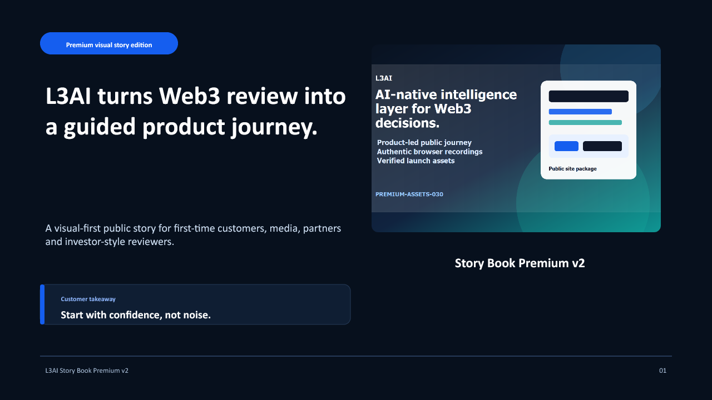
Takeaway: Start with confidence, not noise.
02. Users meet signals before they have a safe way to evaluate them.
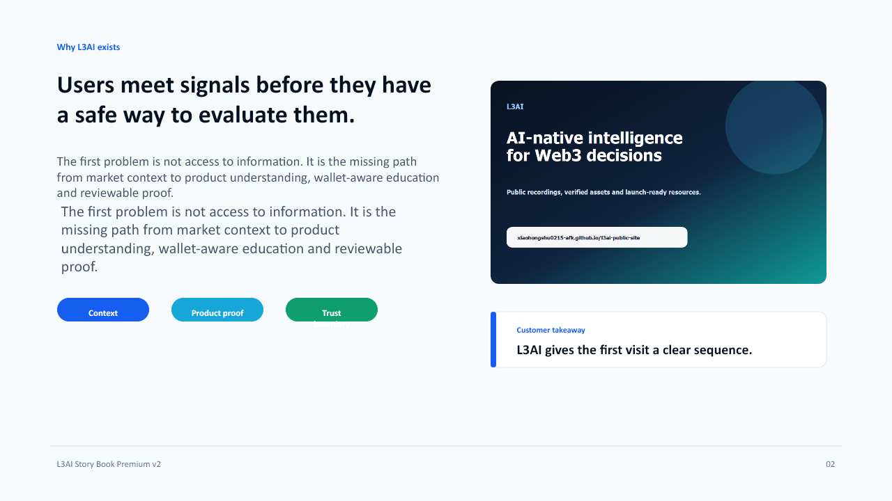
Takeaway: L3AI gives the first visit a clear sequence.
03. A visitor should always know where they are in the story.
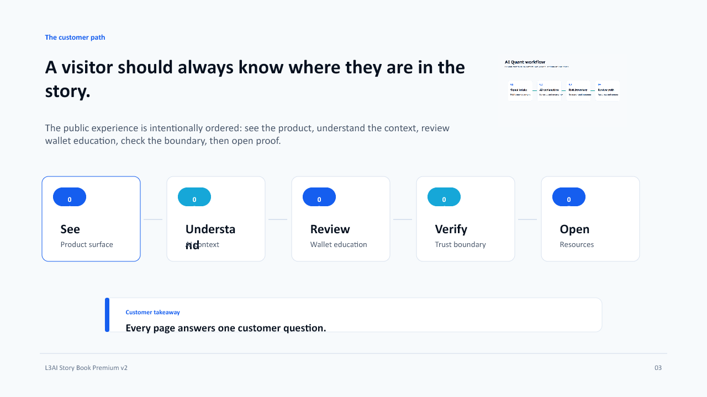
Takeaway: Every page answers one customer question.
04. The homepage has to prove the company before the deck does.
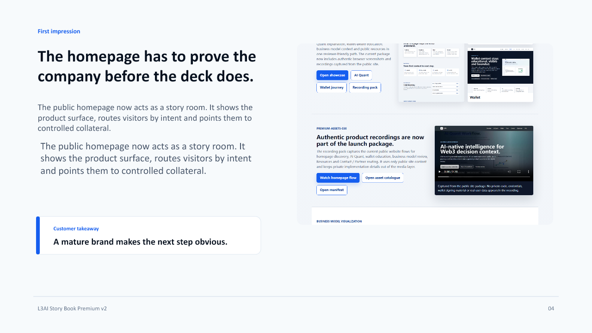
Takeaway: A mature brand makes the next step obvious.
05. AI Quant explains the signal before a user forms a conclusion.
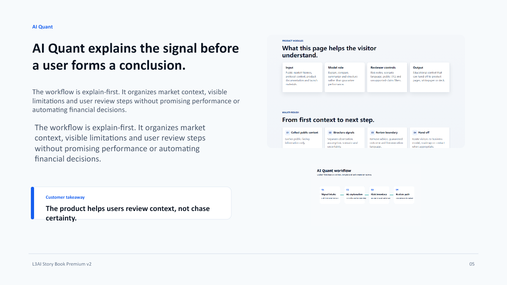
Takeaway: The product helps users review context, not chase certainty.
06. Wallet moments become checkpoints instead of pressure points.
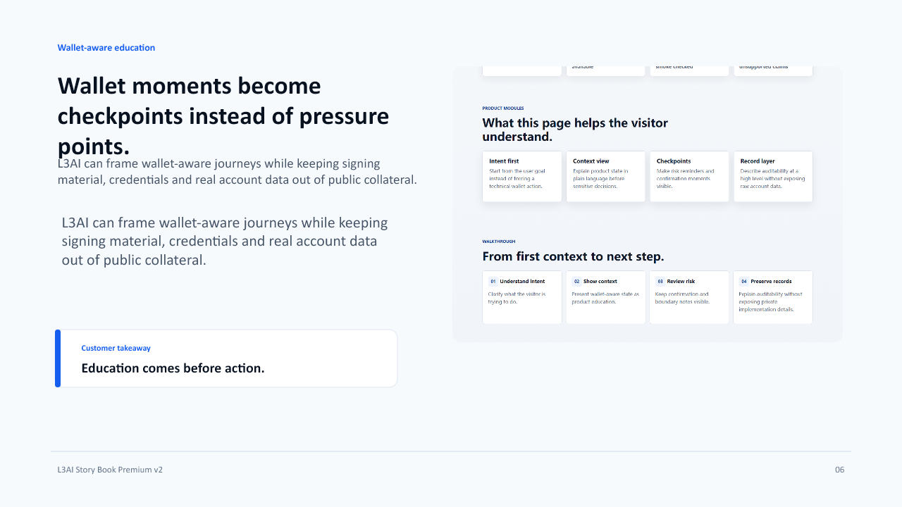
Takeaway: Education comes before action.
07. The business grows when visitors can verify the story.
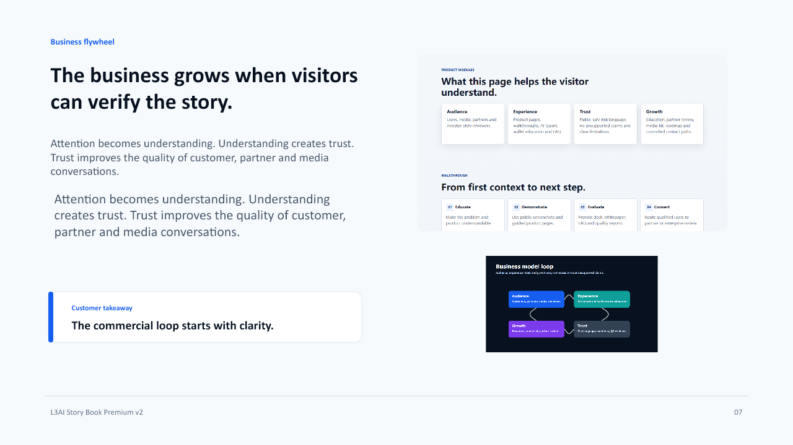
Takeaway: The commercial loop starts with clarity.
08. L3AI connects public education, product proof and partner review.
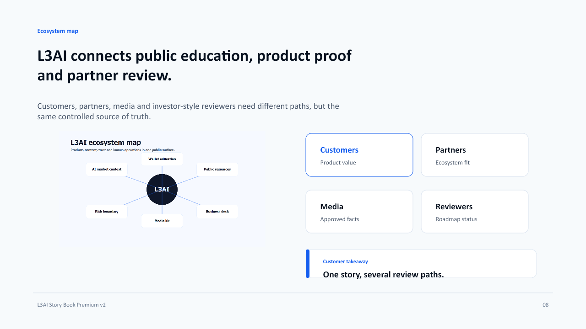
Takeaway: One story, several review paths.
09. Every claim sits in a visible status lane.
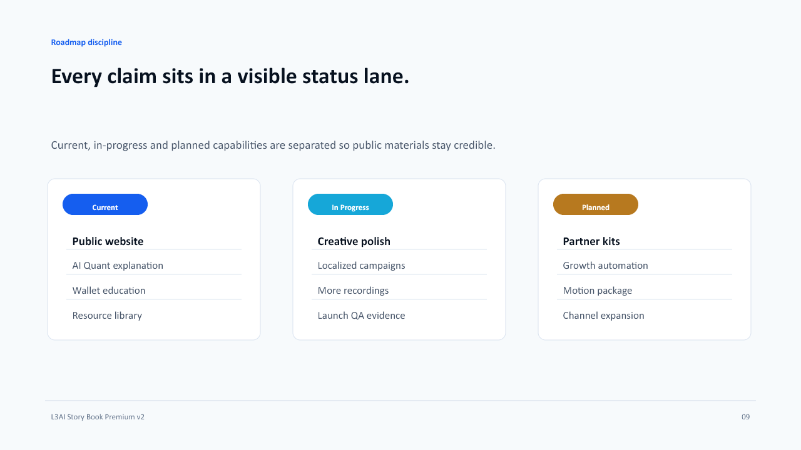
Takeaway: Trust improves when future work is not described as already live.
10. The strongest public story says what it will not do.
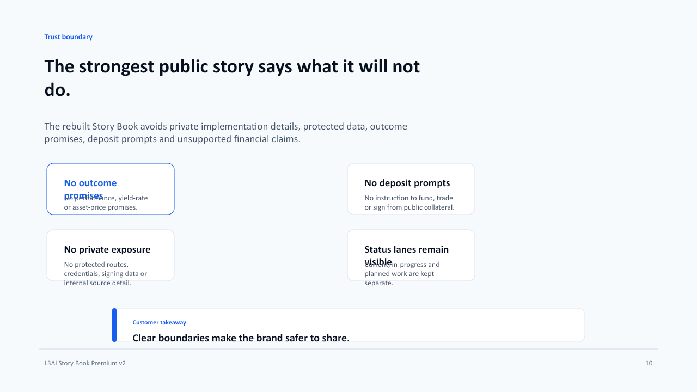
Takeaway: Clear boundaries make the brand safer to share.
11. Resources turn the story into downloadable evidence.
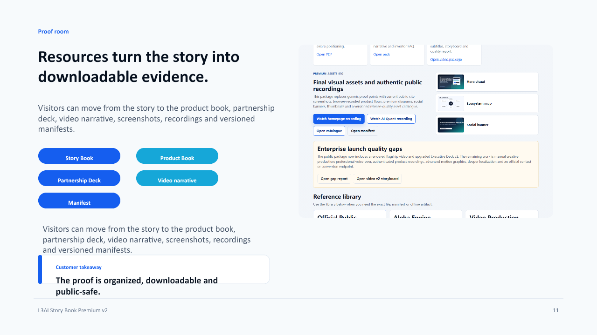
Takeaway: The proof is organized, downloadable and public-safe.
12. Open the story. Review the product. Verify the boundary.
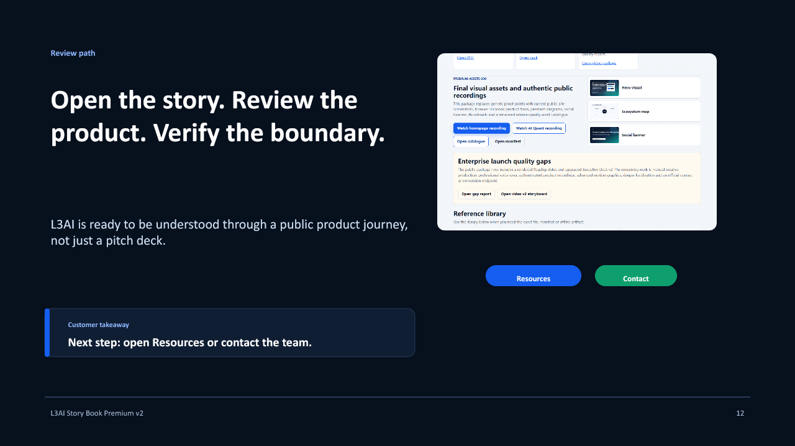
Takeaway: Next step: open Resources or contact the team.